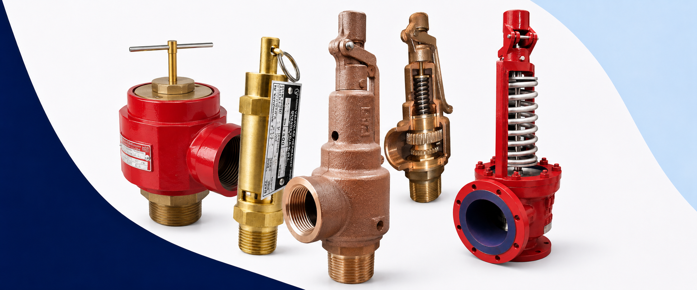
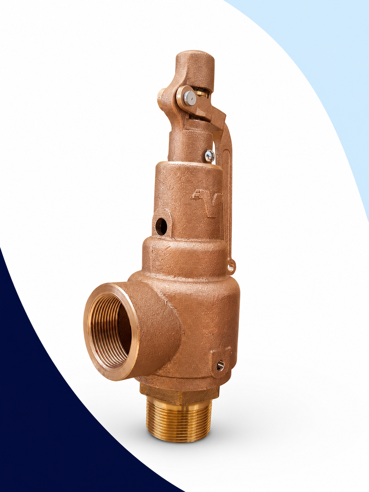
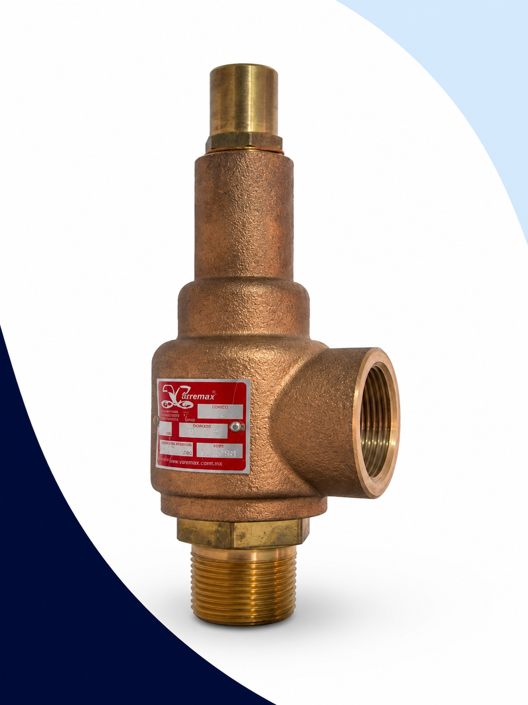
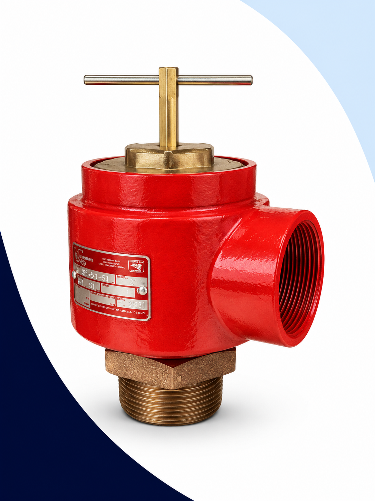

Válvulas de Seguridad y Alivio
Protección confiable contra sobrepresión para vapor, aire, gases y líquidos.
Trabajamos con VAYREMEX y Válvulas Hermanos Cuevas, ofreciendo soluciones para aplicaciones industriales de alta confiabilidad.
¿Qué son las válvulas de seguridad y alivio?
Las válvulas de seguridad y alivio son dispositivos diseñados para proteger recipientes sujetos a presión, tuberías, calderas, tanques, intercambiadores de calor y equipos industriales ante situaciones de sobrepresión que podrían ocasionar daños graves a los equipos o accidentes al personal.
Cuando la presión del sistema supera el valor de calibración, la válvula abre automáticamente para liberar el exceso de presión y vuelve a cerrar una vez que el sistema regresa a condiciones normales de operación.
Seleccionar correctamente garantiza
- Seguridad del personal
- Protección de los equipos
- Cumplimiento de normas y reglamentos
- Mayor vida útil de la instalación

Seguridad vs Alivio: ¿cuál necesita?
Aunque en el mercado se usan indistintamente, existen diferencias técnicas importantes que determinan cuál es el modelo correcto para su aplicación.
Abre de forma instantánea cuando la presión alcanza el valor de calibración. Diseñada para liberar grandes volúmenes de gas en un instante.
Abre de forma progresiva conforme la presión aumenta por encima del valor calibrado. Permite un control más gradual y controlado.

Válvula de Seguridad Roscada
Válvula automática diseñada para proteger sistemas de vapor, aire y gases ante condiciones de sobrepresión. Fabricada en bronce con asiento de acero inoxidable y apertura instantánea al alcanzar la presión de calibración. Una de las válvulas de seguridad roscadas más solicitadas en la industria mexicana.
Aplicaciones
- Calderas
- Tanques y recipientes sujetos a presión
- Sistemas de vapor industrial
- Redes de aire comprimido
- Intercambiadores de calor
Válvula de Seguridad y/o Alivio
El modelo 632 es una válvula versátil que puede trabajar como válvula de seguridad o válvula de alivio dependiendo del servicio. Su diseño en bronce y conexión roscada la hacen ideal para una amplia gama de fluidos industriales. Una solución flexible cuando se requiere cubrir múltiples aplicaciones con un solo modelo.
Fluidos compatibles
- Agua
- Líquidos industriales
- Vapor
- Aire comprimido
- Gases

Líneas Complementarias
Además de los modelos principales, contamos con otras líneas de válvulas de seguridad y alivio para aplicaciones específicas de presión, tamaño y tipo de fluido.

Válvula tipo silbato especial para servicios de aire y gases. Diseño compacto y robusto para sistemas de baja capacidad.

Ideal para servicios de mayor diámetro y baja presión. Amplia capacidad de descarga para sistemas industriales de mayor volumen.

Suministramos válvulas bridadas para aplicaciones industriales de mayor capacidad. Disponibles para vapor, líquidos, gases y procesos industriales de alta presión.
Nuestro equipo puede ayudarle a identificar una alternativa compatible con base en la información de su válvula actual. Envíenos fotografías o la placa de datos.
Contáctenos¿Qué información necesitamos para cotizar su válvula?
Entre más datos nos comparta, más rápido y preciso será el proceso de cotización. Si no cuenta con todos los datos, con los más importantes podemos orientarle.
¿Por qué elegir Defany?
Asesoría Técnica
Le ayudamos a seleccionar la válvula correcta según su presión, fluido, temperatura y tipo de conexión.
Amplio Inventario
Contamos con las modelos más solicitados en inventario para entrega inmediata.
Alternativas Comerciales
Ofrecemos opciones equivalentes entre marcas para que encuentre la solución más conveniente.
Atención Rápida
Cotizamos a la brevedad posible para que pueda tomar decisiones sin demoras.
Preguntas Frecuentes
La válvula de seguridad abre de forma instantánea al alcanzar la presión de calibración y es ideal para gases y vapor. La válvula de alivio abre progresivamente conforme aumenta la presión y es preferida para líquidos. Existen modelos combinados que funcionan para ambas aplicaciones, como el VAYREMEX 632.
La presión de calibración suele estar indicada en la placa de datos o etiqueta de la válvula, y debe corresponder a la presión máxima de trabajo del sistema que protege. Si no cuenta con la placa, puede guiarse por los parámetros de diseño del recipiente o caldera.
Sí, siempre y cuando los parámetros técnicos coincidan: presión de calibración, medidas de conexión, tipo de fluido, temperatura y capacidad de descarga. Nuestro equipo puede orientarle sobre la equivalencia correcta entre marcas como VAYREMEX y Válvulas Hermanos Cuevas.
Los datos más importantes son: tipo de válvula, fluido, presión de calibración, medidas de entrada y salida, tipo de conexión (roscada o bridada) y cantidad requerida. Fotografías de la placa de datos y la válvula instalada son de gran ayuda para identificar el modelo correcto.
Sí. Suministramos válvulas de seguridad y alivio bridadas en clase 150 y clase 300 para aplicaciones industriales de mayor capacidad, incluyendo vapor, líquidos, gases y procesos de alta presión. Contáctenos para cotización por especificación.
Sí. Envíenos fotografías de la válvula instalada y su placa de datos (si existe) y nuestro equipo técnico le ayudará a identificar el modelo, serie y especificaciones para ofrecerle la alternativa correcta.
¿Necesita una válvula de seguridad o alivio?
Nuestro equipo puede ayudarle a seleccionar el modelo adecuado de acuerdo con su presión de trabajo, tipo de fluido, temperatura y conexiones. Trabajamos con VAYREMEX y Válvulas Hermanos Cuevas para ofrecerle la solución más confiable.